30 April 2022
Kinsa Cocha unknown planet
Kinsa Cocha (kimsaqucha) ‐ three tears of divine inspiration. Kinsa Kocha is a mountain range with three lakes splashing in its embrace at an altitude of over 4,000 meters. In this place it seems that if you turn your head, you will not find your own shadow. Here all thought dissolves and your whole being becomes the eyes of God, who came down to check his own quiet corner.
Local tourists with indefinite (expired for months) visas usually get to the very entrance of the national park by the taxi, getting up by the back of a winding road snake. Loops of local trails usually take a long time to climb, both on foot and by car, so we decided to start our hike at the village close to Pisac, well before the lakes themselves.
A bouncing and shaking minibus (colectivo) took us pretty quickly to a trail good known by the local drivers in a small village on the way to the town of Paru Paru (we got out around one and a half hours before the town itself). The trail runs through amazing, colourful fields, interweaving in a gentle embrace with a ringing mountain river ‐ this duo makes the flowers bloom lush and joyful around and the eucalyptus trees stretch proudly to the sky. The flatter sections of the path alternate with fairly steep climbs, but they are all quite comfortable, wide and easy to find. Sometimes the trail, like an mystical hydra, splits into several directions: on one side the sandy car road appears again leading to the village near the park's entrance, while on the other side the walking path rises sharply, cleverly trading your sweat for climbing time. All trail options, however, lead to one place, the small town of Paru Paru.
Paru Paru is a hobbit's dream, where you can farm in peace, chat with the cold river, and give a humble bow to the majestic mountains each morning. Here neat fields stretch out under marvelous inclines, sheep and llamas leap across the road, followed by equally frisky children. In general, harmony and miracles. Interesting fact: even in the humble Paru Paru has a large soccer stadium, which, however, lazily eaten by peaceful sheep.
The hike to the town took about 1 hour and 10 minutes with breaks, Paru Paru itself caught us on its winding road for 30-40 minutes. The town's main road took us directly to the entrance to the Kinsa Cocha National Park.
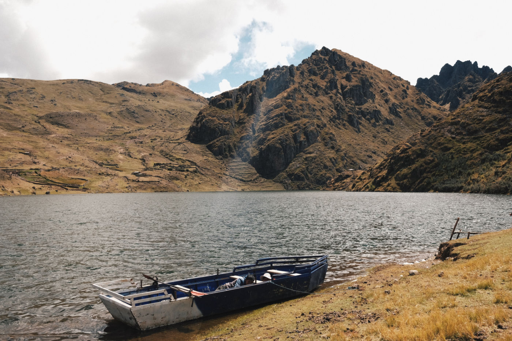
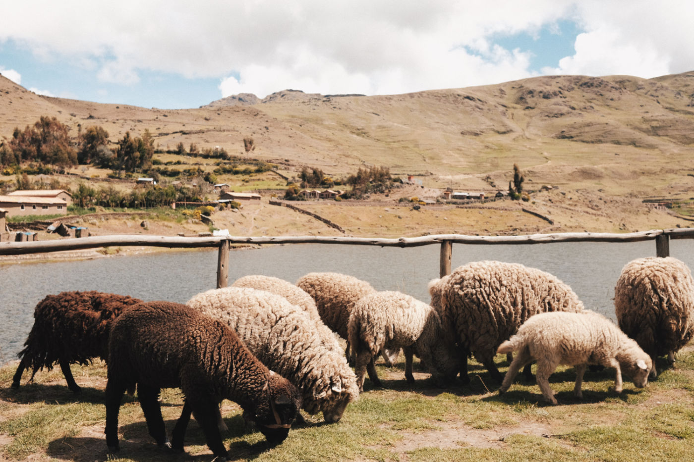
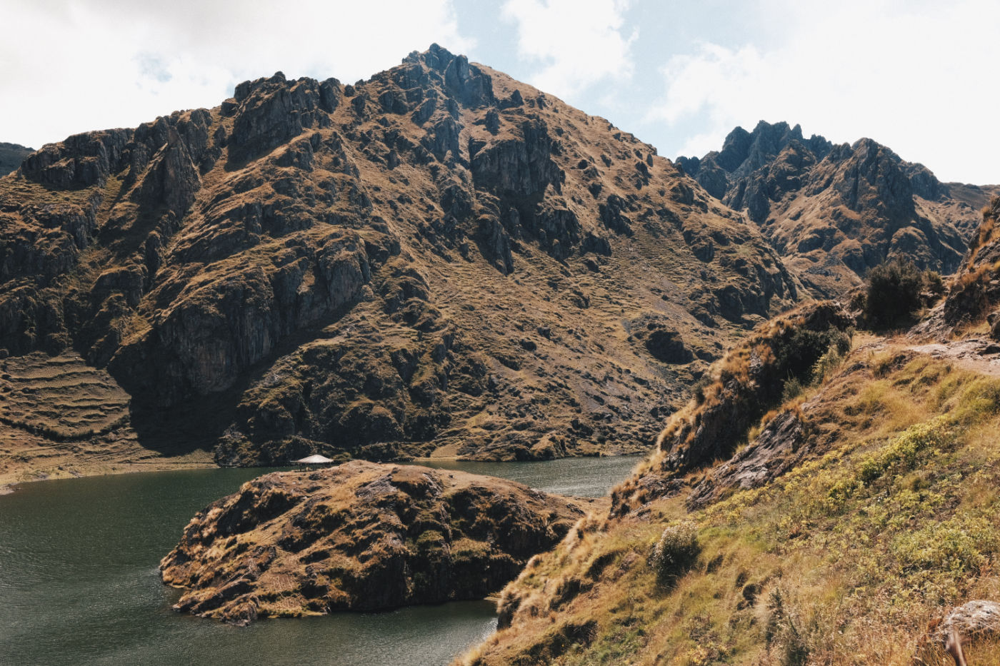
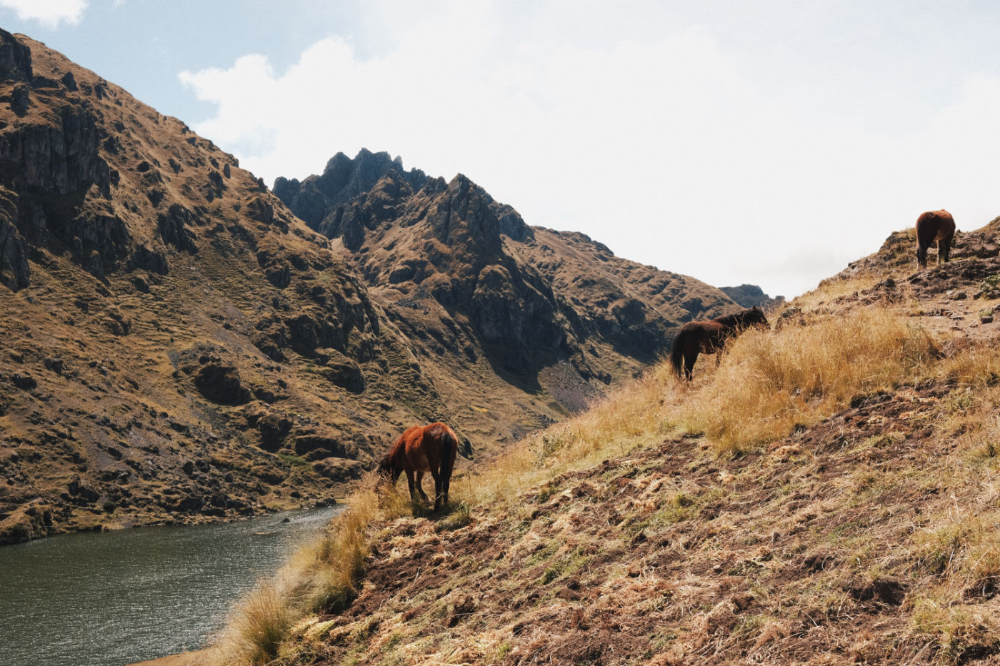
Kinsa Cocha is another planet. The scenery here changes completely, and you realize: you can't find others like this anywhere else. There are several trail options in the park itself. One leads around the main, largest lake (Kinsa Kocha) and back to the park entrance, without tiring the traveler with steep climbs. The other rushes up, leaving the lake below, runs along one side of it, jumps lower, into the clavicles of the giant mountains, and then stretches up again, opening the next two lakes for you. And it is, well really, a journey into another dimension, where even the grass rustles differently, and you know from the start that it is not a rustle at all, but the very language of the universe. Here, huge boulders, the size of houses, bask in the sun in the middle of fields, and mountains hang over your head with walls of bizarre patterns.
This trail is very varied and demands attention. Somewhere it is quite close to the sheer edges of the mountain, somewhere it jumps over crumbling chunks of rock that you have to climb on all fours. But always the trail bestows upon you a well-deserved rest at just the right moment, supports you with the song of the local eagles and, of course, incredible views. The trail took us about 4 hours, capturing only 2 lakes. The third one is a few hours away, which we didn't have, because as the sun goes down the height of the park literally freezes you with its cosmic breath.
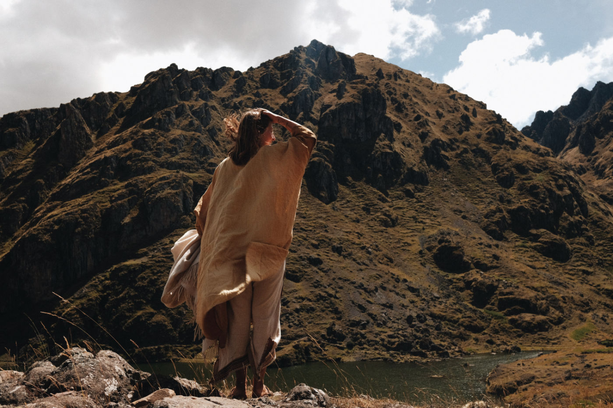
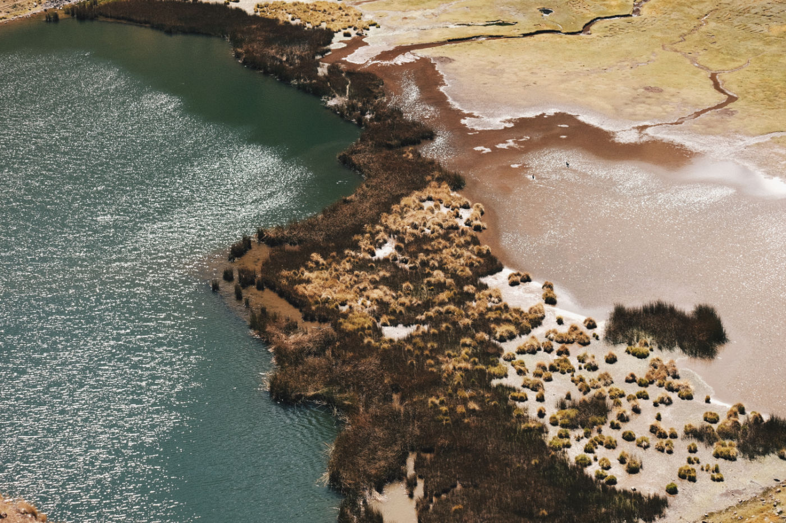
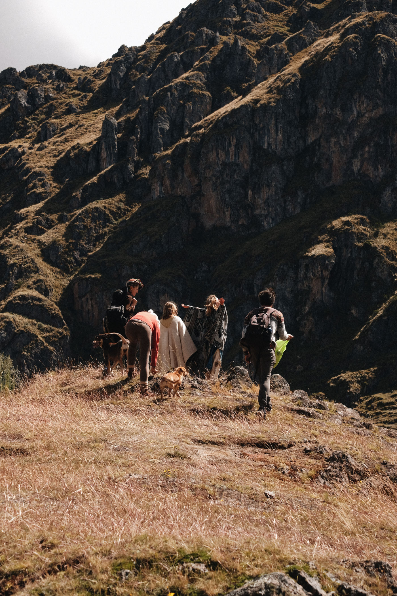
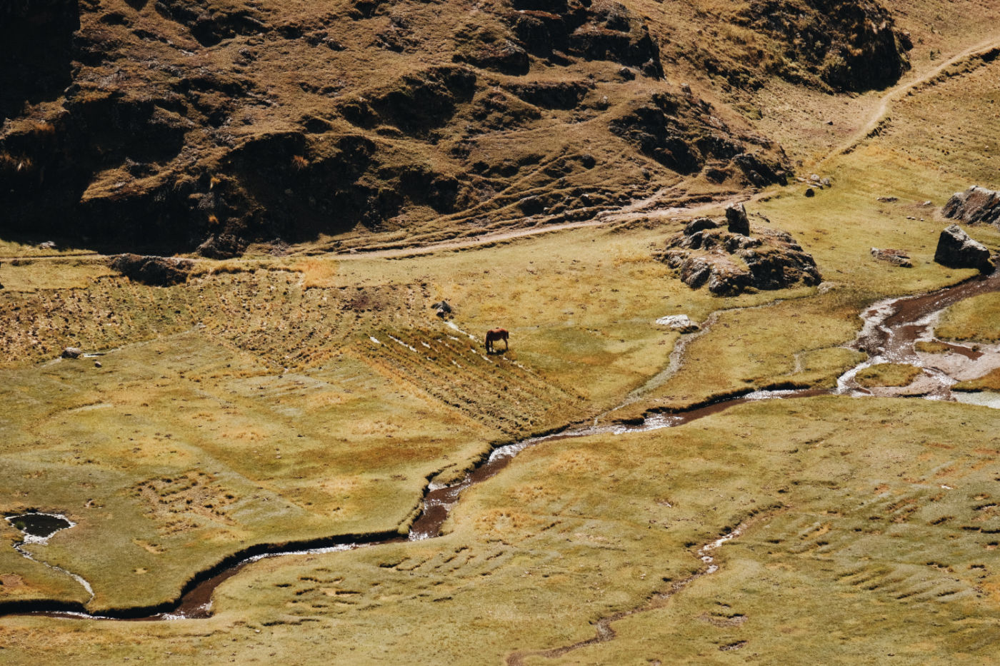
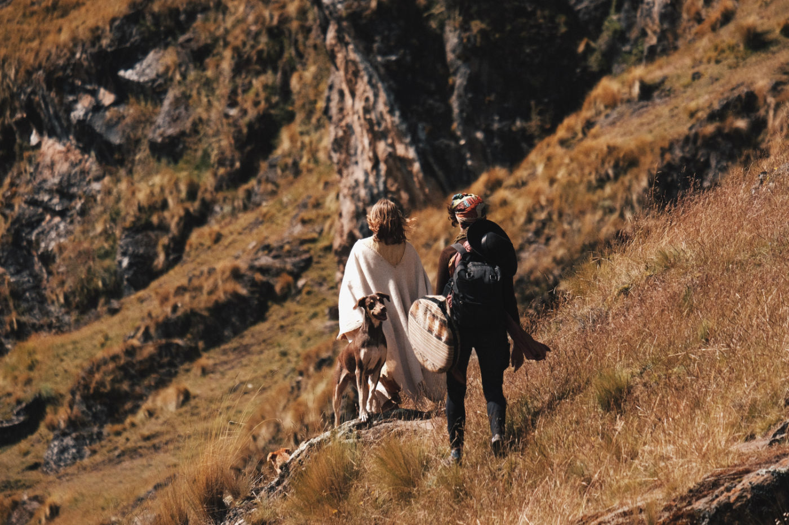
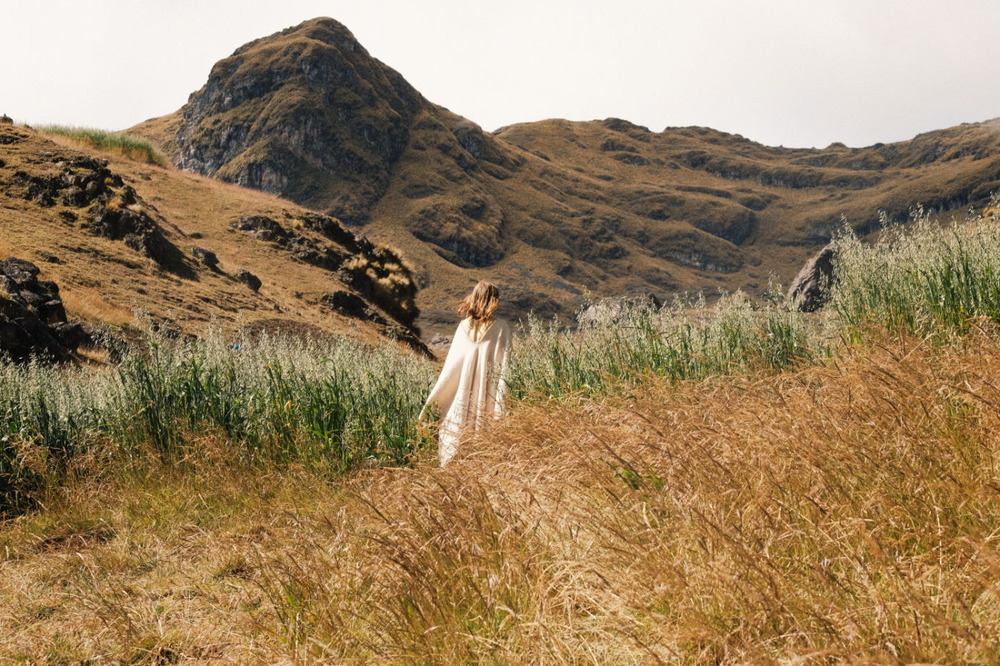
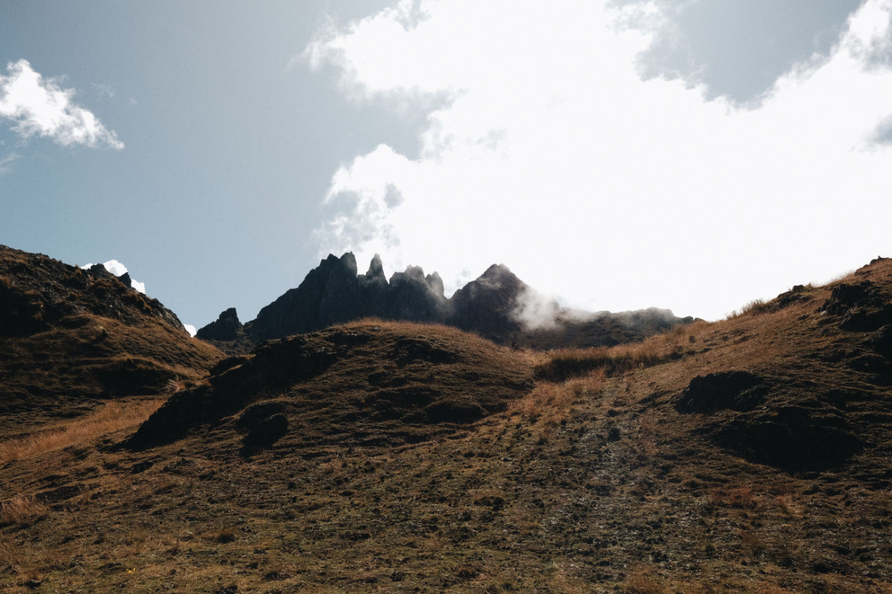
After the descent, the locals kindly offer you herbal tea with petals of bright yellow flowers. And on the road in town, you can catch a car downhill. We for example caught in our hot hugs the open-top truck, making the driver happy and rewarding him with glory for generations to come (the whole town waved at us amicably from the curb). It was one of the most beautiful rides of our lives, racing against the sun, river and wind.
To summarize:
1. How to get there Option 1 is a direct cab from Pisac. Option 2 ‐ minibus in the direction of Paru Paru (3 soles) with an early exit at the trailhead (marked green on the map below), then a 1.5-2 hour climb to the national park. Enclosed is the map below.
2. The price to enter the park is 3 soles.
3. It will be useful to take warm clothes, as at an altitude of more than 4,000 meters it quickly gets cold, especially after sunset. Also bring snacks (nuts, dried fruit, bananas, bread), as the area only offers tea.
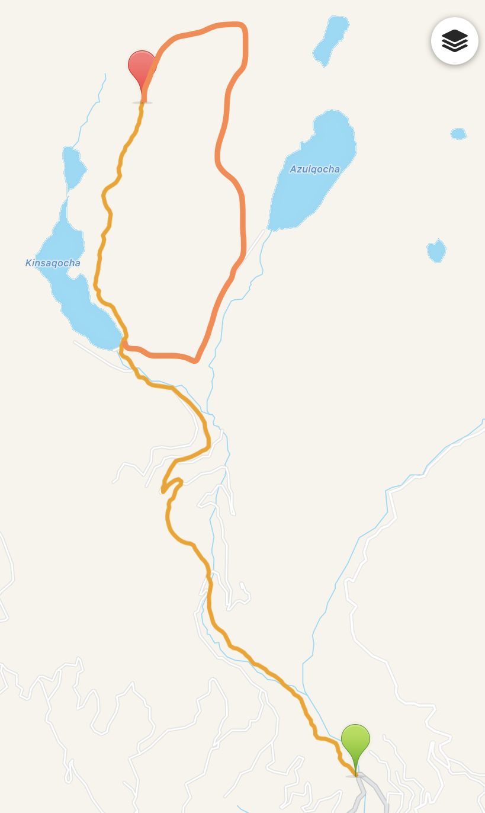
— Dina
•
Кинса Коча ‐ три слезы божественного вдохновения. Кинса Коча - это горный массив, в объятиях которого плещутся три озера на высоте более 4 тысяч метров. В этом месте кажется, что повернёшь голову - и не найдёшь собственной тени. Здесь растворяется всякая мысль и все твоё существо становится глазами Бога, что заглянул проверить любимый уголок.
Местные туристы с бессрочными (отсутствующими месяцами) визами обычно добираются до самого входа в национальный парк на такси, взлетая вверх по спине извилистой змеи-дороги. Петли местных трасс обычно занимают много времени, как для пешего, так и для автомобильного подъёма, поэтому мы решили начать свой хайк в ближайшей к Писаку деревеньке, задолго до самих озёр.
Прыгающий и трясущийся микроавтобус (collectivo) довольно быстро доставил нас к известной местным водителям тропе в маленькой деревне по дороге к городу Пару-Пару (не доезжая одного с половиной часа). Тропа бежит сквозь живописные поля, соприкасаясь в нежных объятиях со звенящей горной рекой - этот дуэт заставляет цветы цвести буйно и радостно, а эвкалипты гордо тянуться к небу. Более плоские участки дорожки чередуются с достаточно крутыми подъёмами, однако все они вполне удобные, широкие и легко различимые. Иногда тропа, будто загадочная гидра, разбегается на несколько направлений: с одного бока снова проявляется песчаная машинная трасса, ведущая в деревню у национального парка, с другого же бока протоптанная дорожка резко уходит вверх, ловко выменивая твой пот на время подъема. Однако все варианты тропы ведут к одному месту, маленькому городу Пару-Пару.
Пару-Пару ‐ это мечта хоббита, где можно спокойно вести хозяйство, болтать с горной рекой и каждое утро дарить скромный поклон величественными горам. Здесь простираются под дивными наклонами аккуратные поля, через дорогу прыгают овцы и ламы, за ними - не менее резвые дети. В общем, гармония и чудеса. Интересный факт: даже в скромном Пару-Пару есть большой футбольный стадион, который, правда, лениво объедают мирные овцы.
Подъём до города занял около 1 часа 10 минут с передышками, сам Пару-Пару задержал нас на своей извилистой дороге на 30-40 минут. Главная дорога города напрямую привела нас ко входу в национальный парк горных озёр.
Кинса Коча ‐ это другая планета. Здесь пейзажи резко меняются, и ты понимаешь: других таких не найти нигде. В самом парке есть несколько вариантов троп. Одна ведёт вокруг главного, самого большого озера (Кинса Коча) и возвращается ко входу в парк, не утомляя путника резкими подъёмами. Другая устремляется вверх, оставляя озеро внизу, пробегается по одному его боку, прыгает ниже, в ключицы великанов-гор, а затем снова тянется вверх, открывая для тебя следующие два озера. И это, ну правда, путешествие в другое измерение, где даже трава шелестит по-другому, и ты с самого начала знаешь, что это не шелест вовсе, а самый настоящий язык вселенной. Здесь огромные валуны размером с дом греются на солнышке посреди полей, а горы нависают над головой стенами с причудливыми узорами. Данная тропа очень разнообразна и требует внимания. Где-то она совсем близко к отвесным краям горы, где-то она прыгает через обвалившиеся куски горной породы, что приходится карабкаться на четвереньках. Но всегда тропа одаривает тебя заслуженным отдыхом в нужный момент, поддерживает песней местных орлов и, конечно, невероятными видами. Путь занял у нас около 4 часов, при этом захватив только 2 озера. До третьего ещё несколько часов пути, которых у нас не было, ведь с заходом солнца высота парка буквально замораживает тебя космическим дыханием.
После спуска местные жители любезно предлагают тебе травяной чай с лепестками ярко-желтых цветов. А на дороге в городе можно словить машину вниз. Мы горячими объятиями захватили грузовик с открытым верхом, осчастливив водителя и наградив славой на поколения вперёд (весь городок дружно махал нам с обочины). Это была одна из самых красивых поездок в наших жизнях, наперегонки с солнцем, рекой и ветром.
Подводя итоги
Как добраться?
1 вариант ‐ прямое такси из Писака.
2 вариант ‐ микроавтобус в направлении Пару-Пару с преждевременным выходом у тропы (отметка на карте), далее подъем к национальному парку длиной в 1,5-2 часа. Прилагаем карту внизу.
Цена за вход в парк ‐ 3 сола.
Будет полезно взять с собой тёплую одежду, так как на высоте 4 тысячи метров очень быстро становиться холодно, особенно после закатного зарева. Также захватите с собой снэки (орехи, сухофрукты, бананы, хлеб), так как на территории предлагают только чай.
Удачных вам приключений, дорогие друзья! Будем рады услышать ваши истории в комментариях.
— Дина